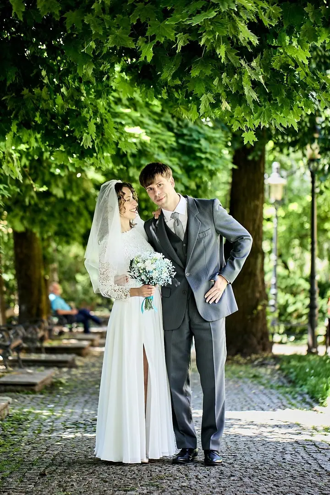
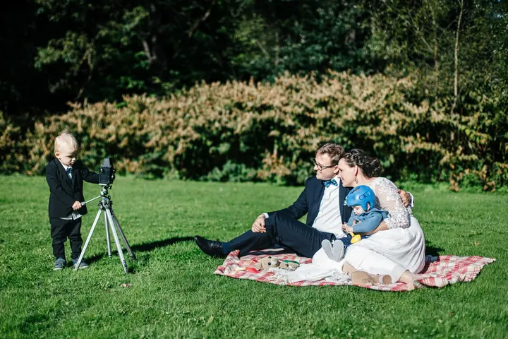

Svatební fotografie
Na svatbách hledám humor, nečekané okamžiky a lidskost. Beru jen několik svateb ročně, abych se každému páru mohl věnovat naplno.

Svatební a interiérový fotograf
Jmenuji se Radim Tesarčík, jsem fotograf z Třince a tvář ateliéru LUMINIA. Na svatbách hledám humor, nečekané okamžiky a lidskost. Fotím po celé ČR a SK a beru jen několik svateb ročně, abych se každému páru mohl věnovat naplno.
Zeptat se na termín
Na svatbách hledám humor, nečekané okamžiky a lidskost. Beru jen několik svateb ročně, abych se každému páru mohl věnovat naplno.
Fotím interiéry, exteriéry a architekturu, realizace nábytkářských firem, wellness a hotelové provozy. Opakovaně spolupracuji s interiérovými studii ONO.je, Nabito a Nadop.
Firemní portréty, korporátní fotografie a reportáže z akcí. Dokumentuji také důležité okamžiky města Třince, například oficiální návštěvu prezidenta.
Fotografii jsem studoval na Institutu fotografických studií PHOTOGENIA v Brně a vystavuji od roku 2003. Jsem lovec emocí, radosti a bláznivých situací vašeho svatebního dne. Fotím lásku, která se směje i pláče zároveň.
Svatební fotky jsem v roce 2024 promítal na plátně 15×5 metrů v kině Kosmos v Třinci na výstavě Bláznivé veselky. O svatební fotografii jsem mluvil v pořadu Dobré ráno na České televizi i v Českém rozhlase. Na portálu MyWed mám 3× Volbu editorů a 2× To nejlepší roku.
Kromě svateb fotím interiéry a architekturu, firemní portréty, produkty a reportáže. Dokumentuji důležité okamžiky Třince a třetím rokem fotím Třinecké adventní podvečery. Domluvíme se česky, slovensky, polsky i anglicky.

Stačí pár slov. Pomůže mi, když zmíníte termín, místo a typ focení, ale doptám se i sám. Odpovím do 24 hodin.
Nabídku připravím individuálně podle rozsahu a termínu, nezávazně.
Na místě hledám humor, nečekané okamžiky a lidskost. Vy si užíváte den a já jsem nablízku.
Fotky pečlivě vyberu a upravím, aby z nich byl celý váš příběh. Na termínu předání se domluvíme předem.
Po celé ČR a SK, nejčastěji v Třinci, Ostravě, Frýdku-Místku a Olomouci.
Nabídku připravím individuálně podle rozsahu a termínu. Napište mi a pošlu ji nezávazně.
Chci se každému páru věnovat naplno, proto beru menší počet zakázek ročně.
Ano, mluvím česky, slovensky, polsky i anglicky.